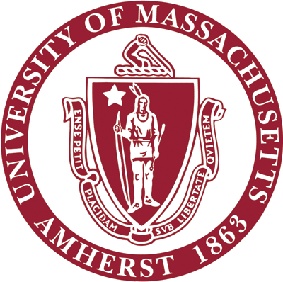
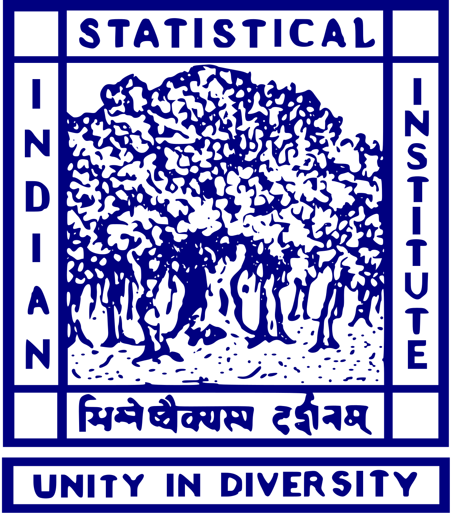
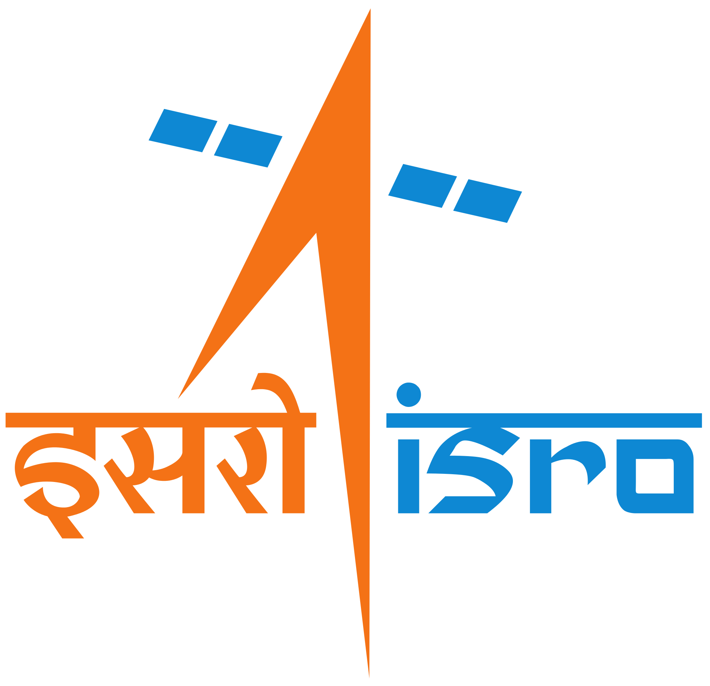
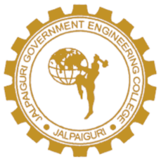

Resume
Link of my updated resume, CV, and research statement.Experience
UMass Amherst
Amherst MA 
2016 - 2024
AWS AI Algorithms
New York NY
 Applied Scientist Intern
Applied Scientist Intern
Summers 2019, 2020
ISI Kolkata
Kolkata IN 
2015-2016
RRSC-East ISRO
Kolkata IN 
Summer 2012
Education
BTech (CSE)
JGEC 
2009 - 2013
Awards
- Best Paper Award, 27th IEEE International Workshop on Parallel and Distributed Scientific and Engineering Computing, May 2026
- CICS Dissertation Writing Fellowship, CICS, University of Massachusetts, Amherst, January 2023.
- AAAI-22 Student Scholarship, 36th AAAI Conference on Artificial Intelligence, January 2022.
- Best Dissertation in M.Tech in Computer Science, Indian Statistical Institute, July 2015.
Service
- Mentor, Ph.D. Application Support Program, UMass Amherst.
- Mentor, Undergraduate Research Volunteers program, UMass Amherst.
- Co-organizer, Machine Learning and Friends Lunch, UMass Amherst.
- Reviewer: FOCS (sub-reviewer), BIT Numerical Mathematics, Neurips, ICLR, AAAI, AISTATS, IEEE Transactions on Image Processing, NeurIPS workshop on Sets & Partitions, ICVGIP.
Miscelleneous
- World Cup 26 tracker that I vibecoded.